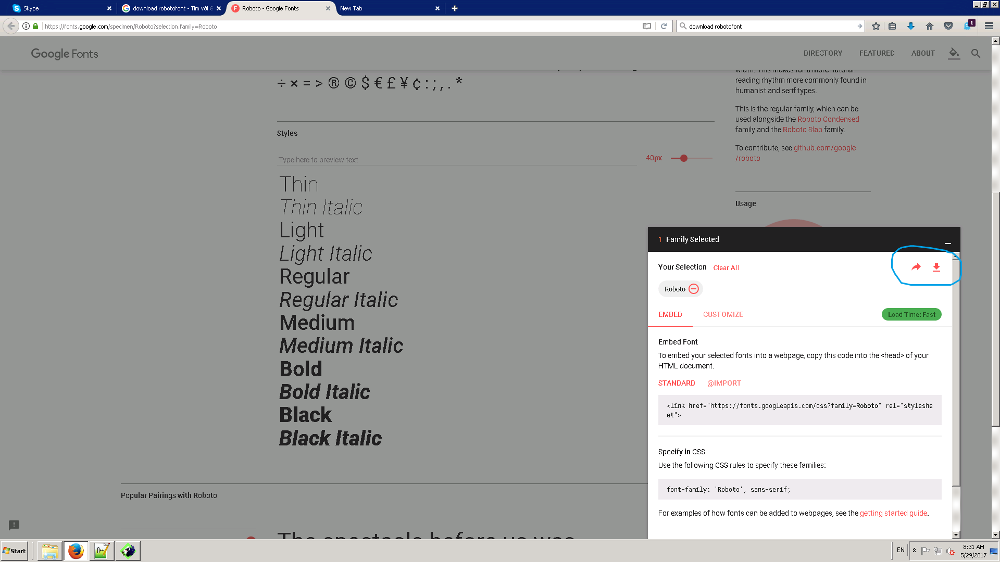

Font chữ Roboto là một tập font mới sans-serif (không đuôi) được Google tạo ra cho Android 4.0. Đây là một font chữ đẹp. Nó bao gồm đầy đủ các kiểu font (thường, in đậm, in nghiêng, in đậm và nghiêng) TODO: thế còn thin, condensed?. Nó được sử dụng trên Android nên coi như toàn bộ điện thoại. Hãy sử dụng nó để chúng ta có một giao diện thống nhất (desktop, applet, mobile).
Font là miễn phí.
Cài đặt font vào hệ điều hành để các ứng dụng khác cũng sử dụng được như MS Word, Photoshop, Gimp.
Đến trang Roboto font site (https://fonts.google.com/specimen/Roboto). Font này là của Google nên hãy sử dụng trang này để có các version mới nhất. Version mới nhất (29/05/2017) là 16.
Bạn chọn font, bật popup sẽ có link download file zip. TODO: Link download
Giải nén để được các file định dạng .ttf.
Copy các file vào thư mục .fonts ở thư mục home của người dùng.
Chọn các file font, chuột phải và chọn "Install".
Sử dụng ở trang web
Sử dụng @font-face.
Nếu trang web là online hãy sử dụng link CSS đến Google Fonts API.
Nếu trang web là offline (các ứng dụng nội bộ không kết nối được Internet) thì hãy download về trang web.
Trang web để chọn font:
https://fonts.google.com/
Thêm một link stylesheet:
<link href="https://fonts.googleapis.com/css?family=Font+Name"rel="stylesheet"/>
Style thành phần với thuộc tính font-family:
.css-selector {
font-family: 'Font Name', serif;
}Bạn có thể request nhiều font một lúc, cách nhau bằng dấu |:
https://fonts.googleapis.com/css?family=Tangerine|Inconsolata|Droid+Sans
Request kiểu font:
https://fonts.googleapis.com/css?family=Tangerine:bold,bolditalicBạn có thể viết rõ ràng hoặc viết tắt hoặc dùng số:
| Kiểu font | Cấu hình |
| Nghiêng | italic hoặc i |
| Đậm | bold hoặc b hoặc số ví dụ 700 |
| Đậm nghiêng | bolditalic hoặc bi |
Ví dụ:
https://fonts.googleapis.com/css?family=Cantarell:italic|Droid+Serif:bold
https://fonts.googleapis.com/css?family=Cantarell:i|Droid+Serif:b
https://fonts.googleapis.com/css?family=Cantarell:i|Droid+Serif:700
Một số font có chia thành các tập con (Latin, Cyrillic, Greek, Vietnamese).
Thêm thuộc tính subset
https://fonts.googleapis.com/css?family=Roboto+Mono&subset=cyrillic
https://fonts.googleapis.com/css?family=Roboto+Mono&subset=greek
https://fonts.googleapis.com/css?family=Roboto+Mono&subset=greek,cyrillic
Nếu trình duyệt hỗ trợ thuộc tính unicode-range thì subset bị bỏ qua.
TODO:
Cyrillic là font dành cho các ký tự mà các nước Đông Âu sử dụng, chúng ta có thể bỏ qua. Tương tự Greek là cho các ký tự Hy Lạp.
Cyrillic? https://vi.wikipedia.org/wiki/B%E1%BA%A3ng_ch%E1%BB%AF_c%C3%A1i_Kirin
Download TTF để cài đặt cho hệ điều hành
Dùng WOFF để dùng cho web? WOFF là định dạng mới tốt hơn.
https://stackoverflow.com/questions/11002820/why-should-we-include-ttf-eot-woff-svg-in-a-font-face
http://www.makeuseof.com/tag/otf-vs-ttf-fonts-one-better/
Sử dụng unicode-range để tiết kiệm bandwidth
https://24ways.org/2011/creating-custom-font-stacks-with-unicode-range/
http://caniuse.com/#feat=font-unicode-range
https://developer.mozilla.org/en-US/docs/Web/CSS/@font-face/unicode-range
Các định dạng: Regular, Regular Italic, Bold, Bold Italic.
Set: Latin, Vietnamese
URL: https://fonts.googleapis.com/css?family=Roboto:400,400i,700,700i&subset=vietnamese
Sans-Serif là font không có đuôi
https://en.wikipedia.org/wiki/Sans-serif
Sử dụng SkyFont
https://www.fonts.com/web-fonts/google
https://www.maketecheasier.com/use-google-roboto-font-everywhere/
https://developers.google.com/fonts/docs/getting_started